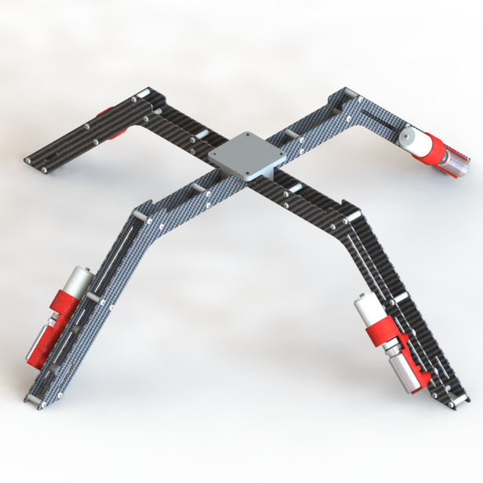
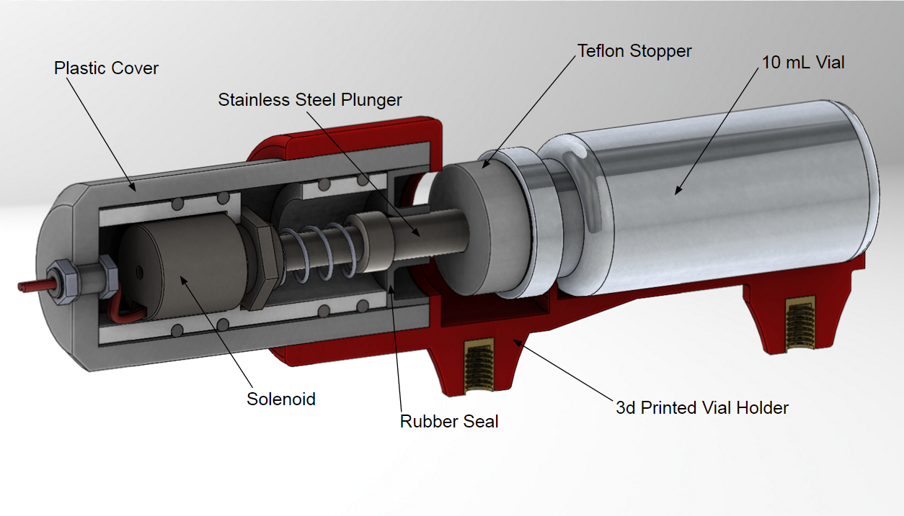
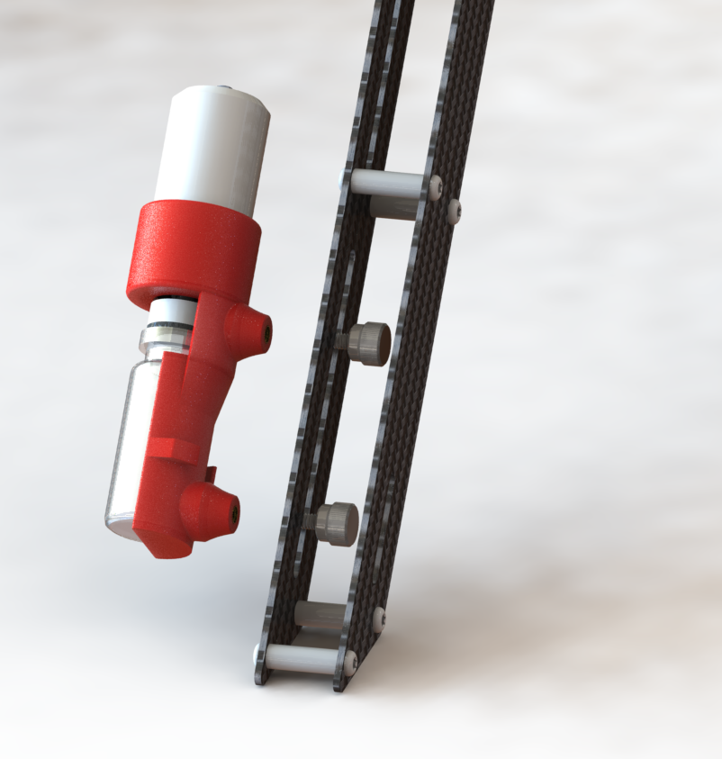

UAV Water Sample Collector
During my first year of engineering school, I led a team to develop a drone-based water sample collection system. The idea for the project was based on a conversation I had with a water-researcher colleague who mentioned that the most tedious part of their work was spending 3-4 hours a day traveling the banks of the Willamette river collecting surface water samples. We set off to create a system that could fly from the roof of the lab and gather samples from points in the nearby river.
Initial funding was granted following a successful pitch to the PSU Beta project board. Additional funding was awarded as we progressed to the finals (placing 4th out of 25 entrants) of the CleanTech Challenge - a prototyping and pitching competition focused on environmental technology. We purchased a waterproof drone and outfitted it with our system.
Mechanical Design
I designed and machined all of the mechanical elements of the collection devices and the custom landing gear. The final version of the water sample collector module (shown below) is the culmination of several iterative cycles over the span of the Summer. The collector module consists of a PTFE (Teflon) plunger actuated by a small solenoid. When the drone lands in water, a moisture sensor alerts a microcontroller and the solenoid is actuated allowing for a sample to be taken.
Materials
To create the prototype, I learned how to machine Aluminum, Steel, Delrin, PTFE, and Viton. FDM and Stereolithography 3D printing were used to accelerate development and reduce cost. The landing gear is made from water-jet cut carbon fiber joined together with Aluminum spacers.
Ease of Use
Easy removal and handling of the samples following a collection mission was a big concern among the researchers we spoke with. The samplers are fully removable from the drone without tools. The samplers mount to the landing gear with thumbscrews and electrical connections are external, waterproof, and easily accessible. For easy transport, the landing gear can be removed from the drone as well.
Results
We were able to demonstrate functionality with short missions on ponds while remaining in the line of sight. FAA regulations prohibit fully autonomous use of drones, so we were unable to test our initially envisioned "fly off the roof of the lab" idea. Should these regulations change, this device is ready to be used by future water researchers.